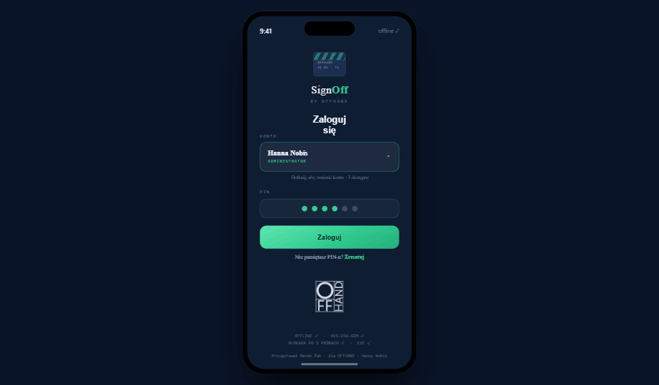
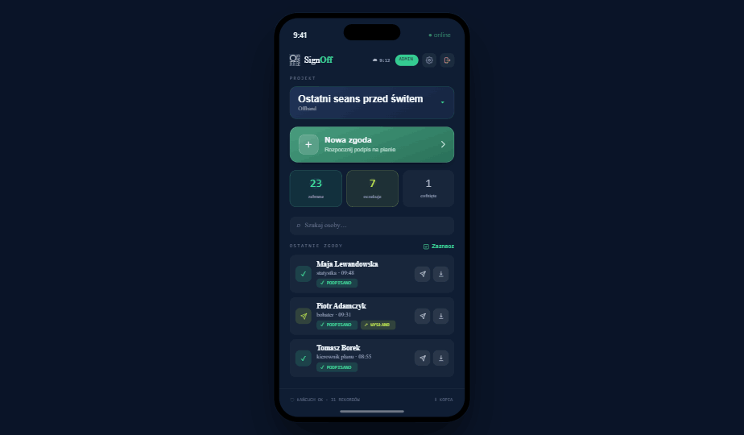
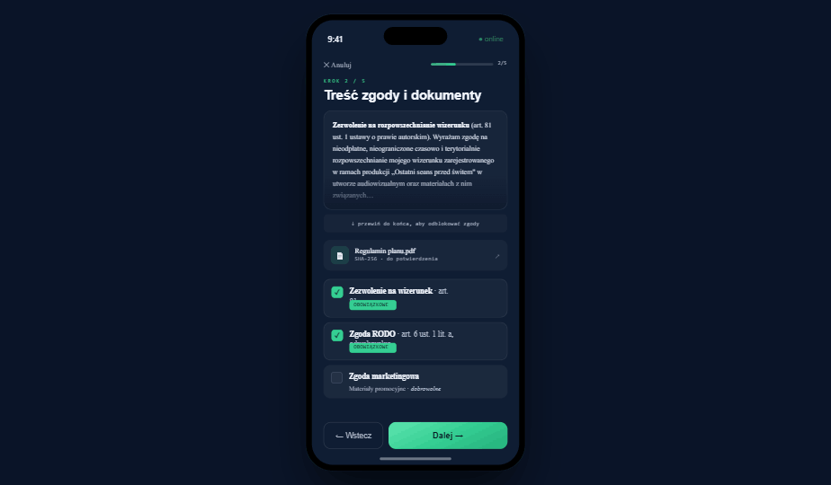
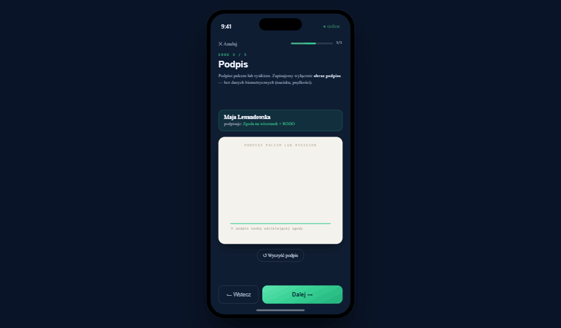
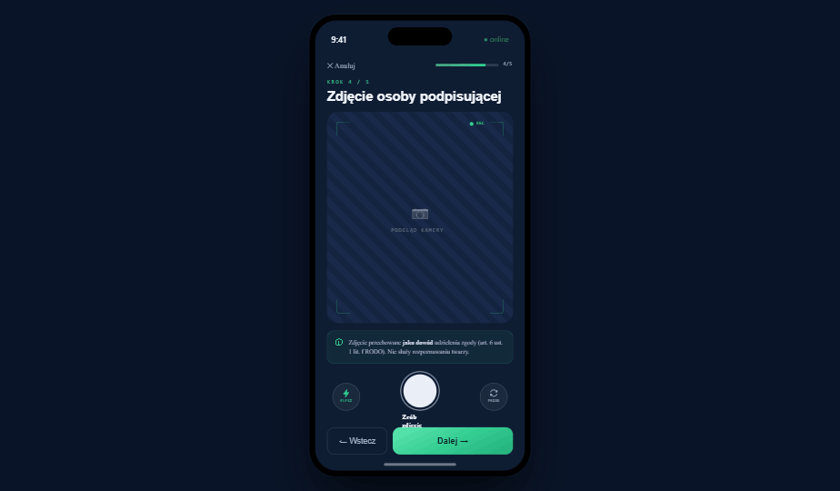
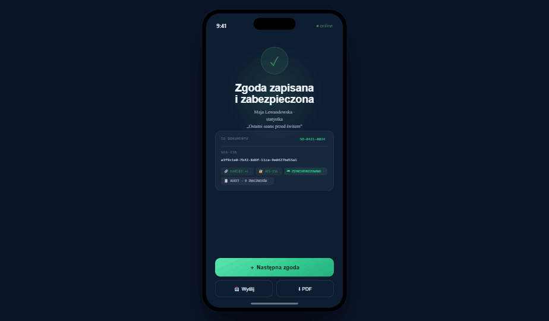

Instrukcja obsługi — aplikacja do zbierania zgód i podpisów na planie
SignOff służy do zbierania na telefonie/tablecie zgód na wizerunek (art. 81) i zgód RODO oraz podpisów dokumentów. Działa też bez internetu, a wszystkie dane są zaszyfrowane. Ta instrukcja prowadzi krok po kroku — nie trzeba nic umieć technicznie.
1. Instalacja na telefonie 2. Logowanie 3. Wybór projektu 4. Zbieranie zgody krok po kroku 5. Wysyłka maili (ważne — do zrobienia raz) 6. Kopia w chmurze i odzyskiwanie 7. Najczęstsze pytania
1. Instalacja na telefonie
Aplikacja otwiera się pod adresem:
Aby działała jak zwykła ikona (na pełnym ekranie, też offline), dodaj ją na ekran główny:
- iPhone (Safari): otwórz adres → dotknij ikony Udostępnij (kwadrat ze strzałką w górę) → przewiń → „Do ekranu początkowego" → Dodaj.
- Android (Chrome): otwórz adres → menu ⋮ (prawy górny róg) → „Zainstaluj aplikację" / „Dodaj do ekranu głównego".
2. Logowanie

PIN jest kluczem, który odszyfrowuje dane. Po 5 błędnych próbach konto blokuje się na chwilę. Aplikacja sama się wylogowuje po 5 minutach bezczynności.
3. Wybór projektu
Po zalogowaniu widzisz pulpit. U góry wybierasz projekt (produkcję), do którego zbierasz zgody. Administrator może utworzyć nowy projekt przyciskiem „＋ nowy".
Kafelki pokazują liczby: zebrane, oczekuje, cofnięte. Niżej jest lista ostatnich zgód i wyszukiwarka osób.

4. Zbieranie zgody krok po kroku
Na ekranie głównym dotknij dużego przycisku „＋ Nowa zgoda" i przejdź przez 5 kroków:
Krok 1 — Dane osoby
Wpisz imię i nazwisko (wymagane), opcjonalnie e-mail (na ten adres pójdzie kopia), telefon, rolę. Jeśli osoba jest małoletnia — zaznacz pole i wpisz dane opiekuna.
Krok 2 — Treść zgody i dokumenty

Przewiń treść do końca — dopiero wtedy odblokują się pola wyboru. Zaznacz zgody:
- Wizerunek (art. 81) — obowiązkowe,
- RODO — obowiązkowe,
- Marketing — dobrowolne.
Jeśli do projektu dołączony jest dokument PDF (np. regulamin), osoba też go potwierdza.
Krok 3 — Podpis
Podaj telefon osobie — podpisuje palcem lub rysikiem na jasnym polu. Przycisk „↺ Wyczyść" pozwala zacząć od nowa. Zapisywany jest tylko obraz podpisu (bez danych biometrycznych).

Krok 4 — Zdjęcie

Zrób zdjęcie osoby podpisującej (dowód, że to ona). Duży jasny przycisk na środku to spust migawki. Po lewej flesz, po prawej przełączenie aparatu (przód/tył).
Krok 5 — Zapis
Aplikacja zapisuje zgodę: nadaje jej numer, sumę kontrolną (SHA-256) i kartę dowodową. Jeśli podałaś e-mail osoby i wysyłka jest włączona — kopia PDF pójdzie automatycznie. Możesz od razu zacząć „＋ Następną zgodę".

5. Wysyłka maili — do zrobienia RAZ
Żeby kopie zgód mogły iść e-mailem z Twojego adresu hankanobis@offhandfilms.com, trzeba raz połączyć aplikację z pocztą. To dwa etapy. Adres jest już wpisany — Ty dodajesz tylko hasło aplikacji z Google.
Etap A — utwórz „hasło aplikacji" w Google (raz)
Zwykłe hasło do poczty tu nie zadziała — Google wymaga osobnego, 16-znakowego „hasła aplikacji". Zaloguj się jako hankanobis@offhandfilms.com i:
abcd efgh ijkl mnop) — skopiuj go. Spacje nie mają znaczenia.Etap B — wklej go w aplikacji (raz)
hankanobis@offhandfilms.com.6. Kopia w chmurze i odzyskiwanie
Każda zgoda jest automatycznie wysyłana jako zaszyfrowana kopia do chmury — na wypadek utraty telefonu. Aby odzyskać dane na nowym urządzeniu:
- Zainstaluj aplikację (punkt 1) i przejdź szybką konfigurację.
- Wejdź w Ustawienia → ☁ Chmura → „Przywróć z chmury".
- Wybierz kopię (jest też lista niezmienialnej historii z datami) → zaloguj się PIN-em.
7. Najczęstsze pytania
Aplikacja wygląda inaczej / brak nowych funkcji
Odśwież ją (pasek „Odśwież" na dole) albo usuń ikonę i dodaj ponownie z adresu.
Nie pamiętam PIN-u
Resetuje go administrator (Marek lub drugi administrator). Ze względów bezpieczeństwa nie da się go odzyskać inaczej.
Czy działa bez internetu?
Tak — zgody zbiera się offline. Kopia w chmurze i e-maile wyślą się, gdy wróci sieć.